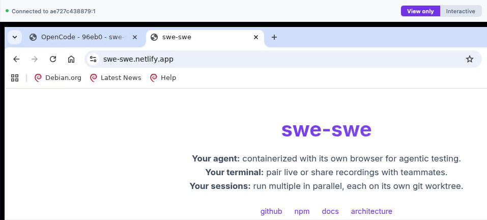

Agent View unavailable page
Lo-fi wireframe -- rough on purpose. Structure & flow only. What the Agent View tab shows when it cannot work, instead of the tab disappearing.
Agent Chat
Terminal
Preview
Agent View
Files
1. What it is
Agent View isn't available on this machine
One sentence: a live browser your agent controls, so you can watch it test your app.
2. Example

Cropped from www/images/swe-swe-screenshot.png (tab row cut off). Greyscale here only; the real page shows it in colour.
3. Why it's missing (changes per case, see below)
These programs are missing: chromium, x11vnc
4. Also affected
Your agent can't use a browser either
5. How to get it
Install them here
[ the one install line to copy ]
then restart swe-swe
Copy
Use another machine
Open setup steps →
Leave it off
Everything else keeps working.
Don't need it?
Hide this tab
"Hide this tab" is remembered in this browser only. Some way back is needed (e.g. in Session Settings).
Box 3 changes per case (the rest of the page stays the same)
Case A -- switched off
You switched it off during setup
Option "Leave it off" shows first.
Case B -- programs missing
These programs are missing: [list]
Option "Install them here" shows first. (Drawn above.)
Case C -- other machine unreachable
Can't reach the browser machine at [address]
Options become: check it's running / check the address. Today this case shows "Starting browser..." forever.
What leads where
→
Works?
→
No: this page (case A/B/C)
→
Pick an option, or hide tab
Yes → live browser, as today
Install + restart → tab works next time
Hide → tab gone in this browser